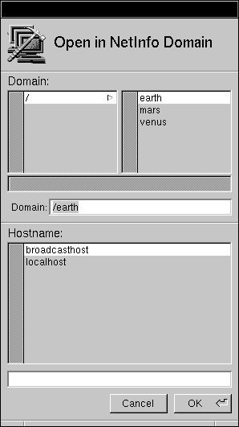

Release 3.3 Copyright ©1994 by NeXT Computer, Inc. All Rights Reserved.
| 13 | NetBooting | |
| In some situations, you may need to boot a NeXT computer from the network rather than from its local startup disk. This procedure, known as NetBooting, can be useful if the local disk is damaged or you want to make extensive changes to the local disk (as when upgrading to a new software release). | ||
| Important: Once configured, a NetBoot client can continue to boot from the network. However, NetBooting can degrade performance and create security risks. Using NetBoot as a permanent configuration is not recommended unless you have specialized needs. |
| Configuring a NetBoot Client |
| When a NeXT computer is configured as a NetBoot client, it doesn't use the files stored on its hard disk. Instead, the files and applications necessary for the client to boot are provided by the NetBoot server. Everything that's done to set up a NetBoot client is actually done on the NetBoot server, not on the client.
Note: It's a good idea to be familiar with the process of system booting before continuing. Familiarity with the booting process makes it much easier to understand the procedures covered in this chapter and to figure out problems that you may encounter along the way. For more information, refer to Chapter 9, "System Startup and Shutdown." You take three steps to configure a NetBoot client: |
| Set up the directory that will be remotely mounted on the client's /private directory. | ||
| Export to the client the "/" directory and the directory used for /private. | ||
| Create a host entry for the client that describes the locations of these directories. |
| Setting Up the Client Directories on the Server
Each NetBoot client will share the server's root file system, but there are several administrative files (such as the NetInfo database, log files, and the swapfile) that must be unique to each client. The server must have a separate directory tree for each client, which the client mounts on its own /private directory during startup. This lets a client keep its own files separate from those of other clients. Tip: When you set up the directory that will be mounted on a client's /private directory, you copy the files from /usr/template/client. If you find you want to make changes from the default files for all clients, consider making them directly in /usr/template/client. (As always, make a copy of all standard files before editing them.) If you need to change any configuration information for all the NetBoot clients you're about to create, do it in this directory before you create the clients. To create the client directories: |
| 1. | Log in as root on the computer you've chosen to be the NetBoot server. | |
| Important: A NetBoot server must have sufficient disk space (about 20 MB per NetBoot client), a large amount of memory (at least 16 MB, more is preferable), and have its disk configured with a second partition mounted as /clients (see "Building a Bootable Disk" in Chapter 7). | ||
| 2. | To create a directory to mount on the client's /private directory tree, enter the following command in a shell window, replacing client1 ... clientN with the host name(s) of the NetBoot client(s): |
 newclient client1 ... clientN
newclient client1 ... clientN
| The newclient command copies /usr/template/client into /clients/host, where host is the host name of the NetBoot client. Once it's installed into /clients/host, this directory tree can be remotely mounted as the /private directory of the client system. |
| Exporting the Local Directories to the Client
Now that you have the directories set up for the NetBoot client, you need to make them available across the network by exporting them. This can be accomplished with NFSManager.
Exporting root Since the NetBoot client will be using the root directory of the NetBoot server, you must export "/" from the server. |
| 1. | Log into the NetBoot server and start up NFSManager, located in /NextAdmin. | |
| 2. | Click the Exported Directories window to make it key. |
| 3. | If there are already exported directories, you'll need to unexport them, unless they're on a separate disk. Follow these instructions for each directory: |
| a. | Click the name in the list, then click Remove. | |
| b. | You may be prompted for the root password for the local domain. If you are, enter the password and click Login. |
| 4. | Click the Add button in the upper right of the window, then type "/" in the Export Directory panel. |
| 5. | Click OK twice. The root directory now appears in the list of exported directories. | |
| 6. | Enter the host name of the NetBoot client in the text field under Root Access, then click Add. | |
| 7. | If you didn't have any directories exported before, enter the host name of the NetBoot client in the text field under Read Only Access and click Add, then set the default access button to None. This provides no access to the root directory for other computers. |
| 8. | If you did have other directories exported before, set the default access button to "Read only." If computers need read/write access to some directory on the disk, set the default access button to Read/write. |
| Warning: | Allowing read/write access to the root directory is a serious security risk. If possible, don't configure an existing file server as a NetBoot server. | |
| Click OK. |
| Exporting the Private Directory
Now export the directory that will be mounted as /private on the client. |
| 1. | Still in NFSManager, click the Add button in the upper right of the Exported Directories window. | |
| 2. | Enter /clients/host in the Export Directory panel, replacing host with the host name of the NetBoot client. Click OK. | |
| 3. | Enter the host name of the client in the text field under the Root Access column, then click Add. | |
| 4. | Enter the host name of the client in the text field under the Read/Write Access column, then click Add. | |
| 5. | Set the default access button to None. | |
| 6. | Click OK. |
| Creating the Host Entry
After you've identified which server directories are available to the client, you need to create a host table entry that tells where they're located. You do this using the HostManager application. |
| 1. | If the NetBoot client has not yet been added to the network, use the instructions for host addition in Chapter 2, "Setting Up a NetInfo Network." | |
| 2. | Start up the HostManager application, located in /NextAdmin. | |
| 3. | If you're not logged in as root, HostManager will display a panel telling you that you must have superuser status to run this application. Enter the password for the root account and click Login. | |
| 4. | Choose Open from the Host menu. The Open In NetInfo Domain panel appears. |
|  |
| 5. | Select the root domain by clicking "/" in the Domain section of this panel. If you have a network with more than two levels of NetInfo domains, click the appropriate domain. In the Hostname section of this panel, click the host you're making a NetBoot client, then click OK. The host window appears. |
| 6. | Click the Netboot Configuration button. |
| 7. | Enter mach in the Default Kernel field. Enter the pathname of the partition to be mounted as the client's root directory in the Root Directory text field. This should be server:/ where server is replaced by the host name of the NetBoot server. | |
| 8. | Enter the pathname of the directory to be mounted as the client's private directory in the Private Directory text field. The pathname should be server:/clients/hostname where server is the name of the NetBoot server and hostname is the name of the host you're setting up for NetBooting. |
| 9. | Click OK. |
| 10. | Save the modified host entry by choosing Save from the Host menu. |
| Booting the Client |
| You're now ready to boot the client from the network. |
| 1. | Turn on the client computer. | |
| 2. | Immediately after the "Testing System" message goes away, stop the boot process by holding down the Command bar and pressing the ~ key (without holding down the Shift key). On keyboards with two Command keys, hold down the right Command key while pressing the ~ key. This displays the ROM Monitor window. (If you're a little slow and the Restart/Power-Off panel appears instead, press the Power key and try again.) | |
| 3. | Boot the computer from the network by entering the command ben at the ROM Monitor prompt. If you want to configure this computer so that it always boots off the Ethernet, you can set the startup device in the Preferences application. |
| If you see error messages when you boot, consult the "Troubleshooting" section for help. |
| Troubleshooting |
| If you receive an error message when using a NetBoot client computer, you may find a solution in one of the following sections.
Conflicts with NFS You may see an error message similar to either of the following while using NFSManager or when you reboot the NetBoot server: |
 exportfs: /directory: parent-directory (/) already exported
exportfs: /directory: parent-directory (/) already exported
 exportfs: /: sub-directory (/directory) already exported
exportfs: /: sub-directory (/directory) already exported
| These messages result from the fact that you can't export a directory that's either a parent or a subdirectory of one that's already exported if both directories reside on the same disk partition. For example, if you attempt to export "/" and /usr/spool/mail, you see an error message.
To avoid this type of error, export the parent directory only. In this example, this means using NFSManager to remove the entry for /usr/spool/mail so that only "/" is exported. This avoids the error condition and still makes /usr/spool/mail available. For more information, see Chapter 4, "Setting Up the Network File System," and the UNIX manual page for exportfs.
Permission Problems If you encounter a permissions problem when you NetBoot the client system, you see an error similar to this: |
 mount root mars: failed, rpc status 13
mount root mars: failed, rpc status 13
| Use NFSManager to make sure that the "/" and private directories are exported with root access for the NetBoot client.
Important: Security problems can arise if a NeXT computer is configured both as a NetBoot server and as the NFS server for network-wide user accounts and/or the mail server. This arises from the fact that the directories exported for NetBooting require that they grant root access to the NetBoot clients. To avoid possible security risks, use some other computer as the NetBoot server, or use an external disk for the other types of file sharing (general purpose, home directory, or mail). If you must use a computer with a single disk for NetBoot serving and some other type of file serving, be aware of the security risks introduced by granting root access to the entire network. |